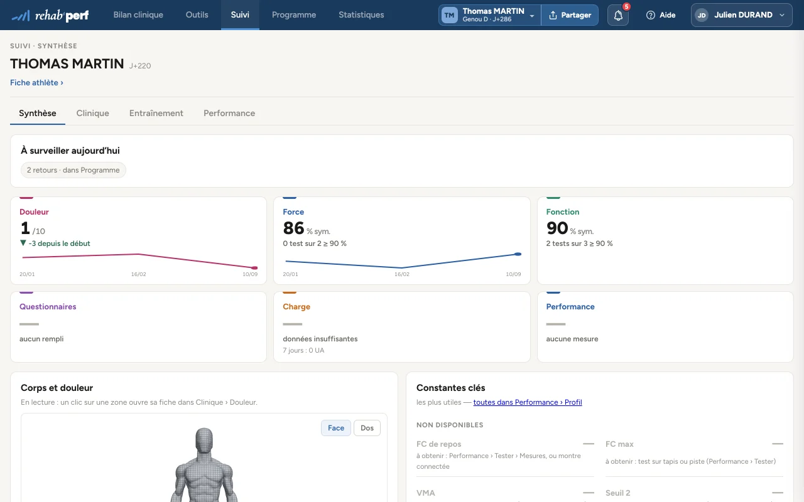
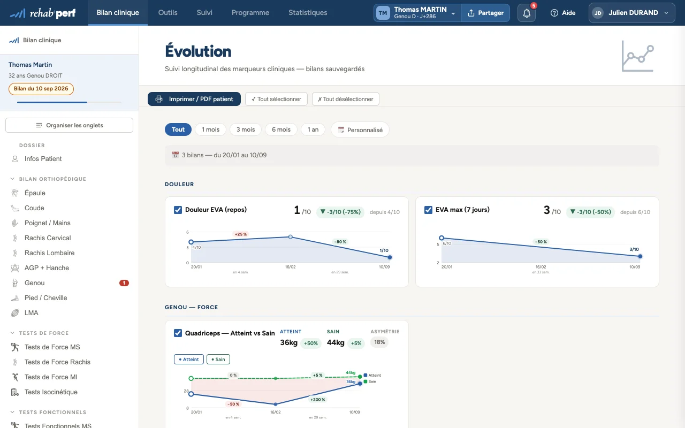
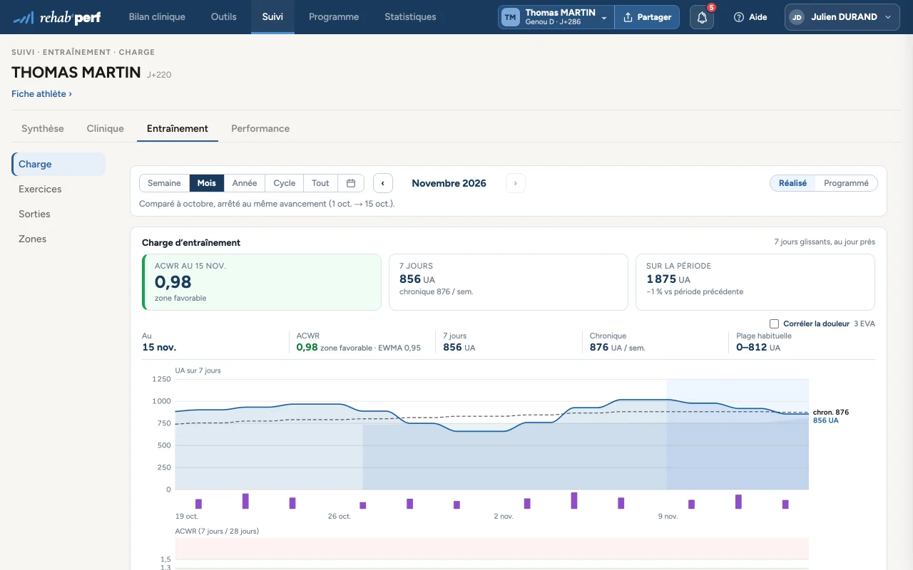
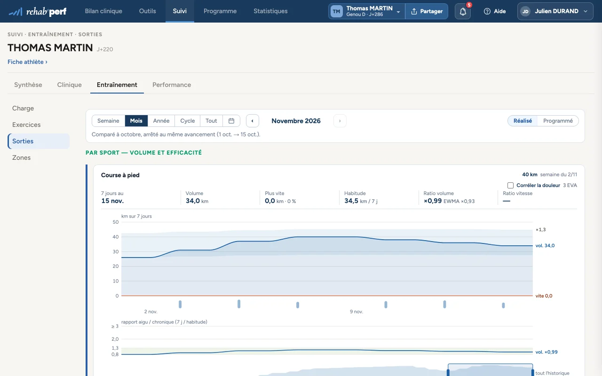
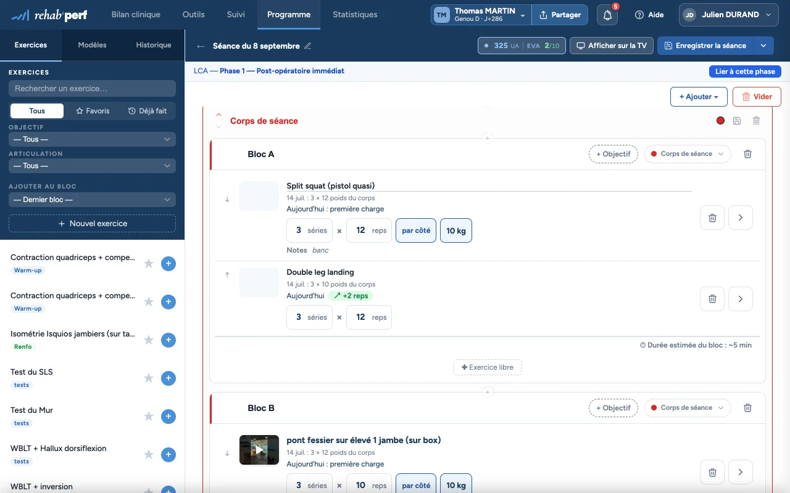
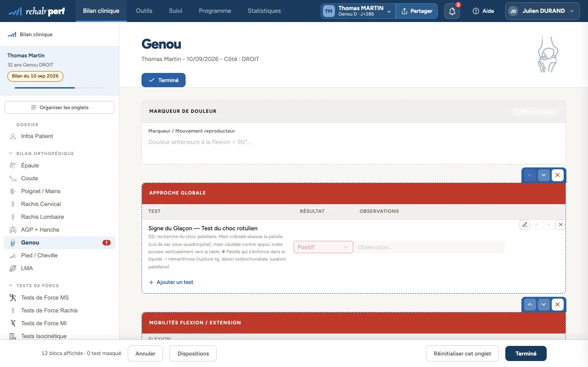

Le produit
Deux minutes pour voir
Deux minutes pour voir
ce que ça change
Les écrans que vous aurez sous les yeux tous les jours. Aucun n'est redessiné : ce sont des captures de l'application, sur un dossier fictif.






